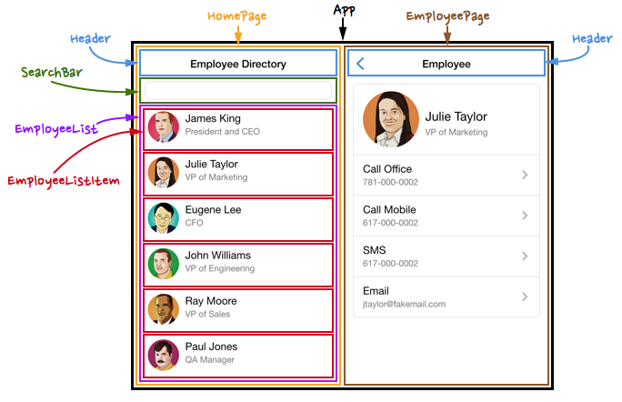

React
(Main aspects)
Agenda
- What is React?
- Components
- JSX
- State
- Props
- Virtual DOM
What is React?

- A JavaScript library for building user interfaces (UI)
- Creared by Facebook in 2013
- Based on components approuch
- Used for creating single page application (SPA)
Components
- Each block is component
- Components can be reused many times
- Components are similar to JS functions.
- Can be statefull or stateless
- Render method returns the result of component
Components
Webpage components
Components
1. Functional stateless component
2. Statefull Class-component
JSX
- It is a syntax extension to JavaScript
- You can use React without JSX
- Allows to write HTML in JS(React) code
- You have to transpile JSX
JSX usage
- You can use almost any JS code inside {}
- The style attribute takes a JS object as a value
- Use className instead of class
- All DOM properties and attributes must be in camelCase style
<Component title="Some title" value1=2 value2=-1 />State
- It is object where current state of the components is stored
- Initialized in the constructor
- To change state use this.setState() method, not this.state = ...
- Components re-renders on each state change
Props
- Props are arguments passed into components
- Props are passed to components via attributes
- Each component simply receives some data and display it in the required form
- Props are read-only! Component shouldn't modify props
Props vs State
- Props
- Props are immutable
- Passed from parent component
- Detemine the view upon creation, and then remain static
- State
- State are mutable
- Possible to define states in component itself
- The state is set and updated by the object
Virtual Dom
- Accelerates application rendering and improves performance.
- React creates Virtual DOM in memory.
- Uses 2 virtual trees (new and previous) to find differences
- In real DOM updates only those parts that are necessary